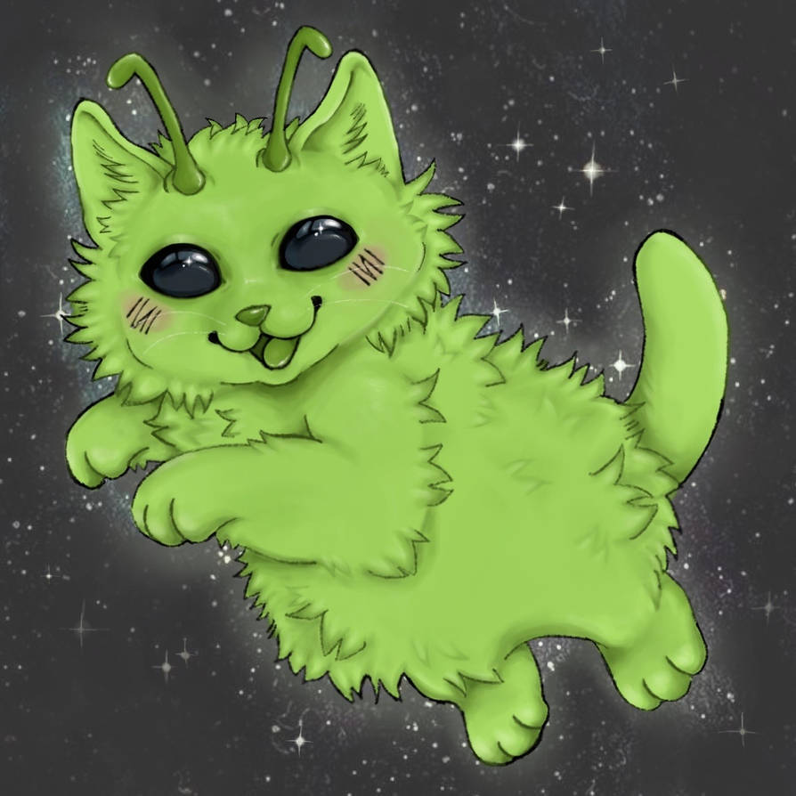

Dawson recently adopted a pet from his alien side of the family. Her name is Kate and she's a Zorblax-Cat breed. She eats and drinks a lot which is pretty expensive, but it's worth it to Dawson. Every Zorblax has a special ability and Dawson thinks that Kate's ability is invisibility. She has bright green fur and black eyes. She's very friendly towards Dawson, but closed off to the rest of his family and friends.
